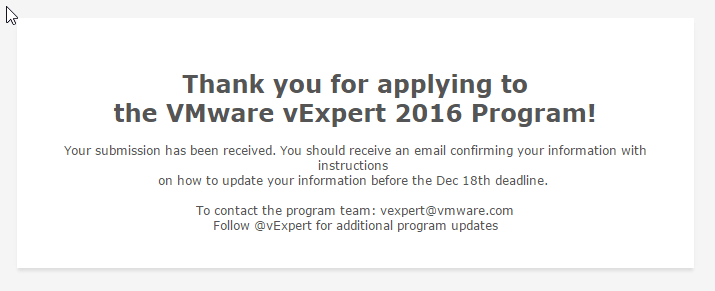

vExpert 2016
BlogCompartilhe esse post nas redes sociais...
Acabei de ver no twitter (@vExpert) que foram abertas as inscrições para o programa vEXPERT 2016. Eu já estava aguardando isso há tempos, desde que comecei a escrever esse blog :) Agora estou na torcida. O resultado sai em Fevereiro de 2016.

[su_box title=“Recomendação”]Se você quiser me fazer uma recomendação clique no link e preencha o formulário. Mas atenção, como está escrito no formulário, recomendações não contam como “votos”, portanto, recomende apenas se você **“realmente” **gosta do trabalho que estou fazendo aqui no blog Homelaber Brasil e acha que estou contribuindo para a comunidade #VMware em geral.
Fiz a inscrição com o nome de Valdecir Carvalho e o e-mail valdecir.carvalho@outlook.com. [/su_box]
Links:
https://communities.vmware.com/community/vmtn/vexpert
https://blogs.vmware.com/vmtn/2015/11/vexpert-2016-applications-are-now-open.html
The awards are for individuals, not companies, and last for one year. Employees of both customers and partners can receive the awards. In the application, we consider activities from the previous year as well as the current year’s activities in determining who gets awards. We look to see that not only were you active but are still active in the path you chose to apply for.
If you are interested in becoming a vExpert the criteria is simple. We are looking for IT Professionals who are giving back to the community and go above and beyond their day job.
Benefits and Activities throughout the program year the awardees will receive
* vExpert certificate
* permission to use the vExpert logo on cards, website, etc for one year
* access to a private directory for networking, etc.
* exclusive gifts from various VMware partners
* access to private betas (subject to admission by beta teams)
* 365-day eval licenses for most products
* private pre-launch briefings
* private briefings from tier 1 alliance partners
* "blogger early access" program for vSphere and some other products
* featured in a public vExpert online directory
Each year, we bring together in the vExpert Program the people who have made some of the most important contributions to the VMware community. These are the bloggers, book authors, VMUG leaders, speakers, tool builders, community leaders and general enthusiasts. They work as IT admins and architects for VMware customers, they act as trusted advisors and implementors for VMware partners or as independent consultants, and some work for VMware itself. All of them have the passion and enthusiasm for technology and applying technology to solve problems. They have contributed to the success of us all by sharing their knowledge and expertise over their days, nights, and weekends.
vExperts who participate in the program have access to private betas, free licenses, early access briefings, exclusive events, free access to VMworld conference materials online, exclusive vExpert parties at VMworld and other opportunities to interact with VMware product teams. They also get access to a private community and networking opportunities.
Evangelist Path The Evangelist Path includes book authors, bloggers, tool builders, public speakers, VMTN contributors, and other IT professionals who share their knowledge and passion with others with the leverage of a personal public platform to reach many people. Employees of VMware can also apply via the Evangelist path. A VMware employee reference is recommended if your activities weren’t all in public or were in a language other than English.
Customer Path The Customer Path is for leaders from VMware customer organizations. They have been internal champions in their organizations, or worked with VMware to build success stories, act as customer references, given public interviews, spoken at conferences, or were VMUG leaders. A VMware employee reference is recommended if your activities weren’t all in public.
VPN (VMware Partner Network) Path The VPN Path is for employees of our partner companies who lead with passion and by example, who are committed to continuous learning through accreditations and certifications and to making their technical knowledge and expertise available to many. This can take shape of event participation, video, IP generation, as well as public speaking engagements. A VMware employee reference is required for VPN Path candidates.
Compartilhe esse post nas redes sociais...Valdecir Carvalho
Nerd e pai orgulhoso da Mariana e João. Profissional Sênior de TI com foco em arquitetura de infraestrutura e cloud computing. Blogueiro, podcaster, palestrante, amante de comunidades técnicas, fotógrafo aposentado e adora jogos antigos.
#vExpert · #VMUGLeader · #VUGBrasil · #vBronwBagBrasil · #VeeamVanguard